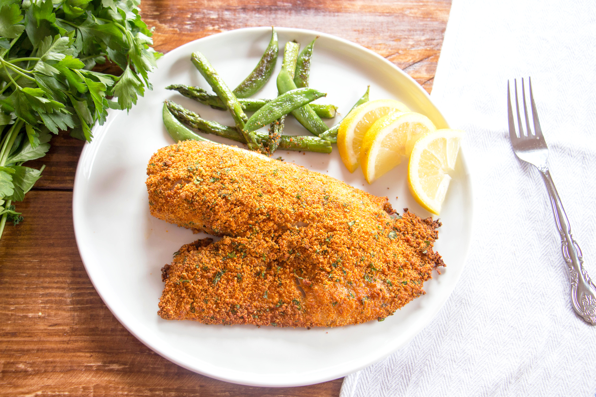

This recipe for Parmesan-crusted tilapia is quick and easy with plenty of
flavor! Even my son (who doesn't like fish that much) went back for seconds.
Works well in low-carb diets.
Ingredients
- ¾ cup grated Parmesan cheese
- 1 tablespoon chopped fresh parsley
- 2 teaspoons paprika
- Salt and ground black pepper to taste
- 4 tilapia fillets
- 1 drizzle olive oil
Steps
- Preheat the oven to 400 degrees F (200 degrees C). Line a baking sheet with aluminum foil.
- Whisk Parmesan cheese, parsley, paprika, salt, and pepper together in a shallow dish.
- Coat tilapia fillets with olive oil and press into the Parmesan cheese mixture. Arrange coated fillets on the prepared baking sheet.
- Bake in the preheated oven until the fish flakes easily with a fork, 10 to 12 minutes.